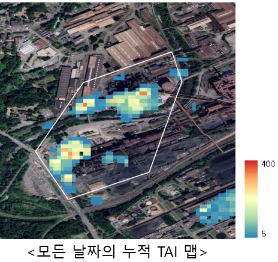
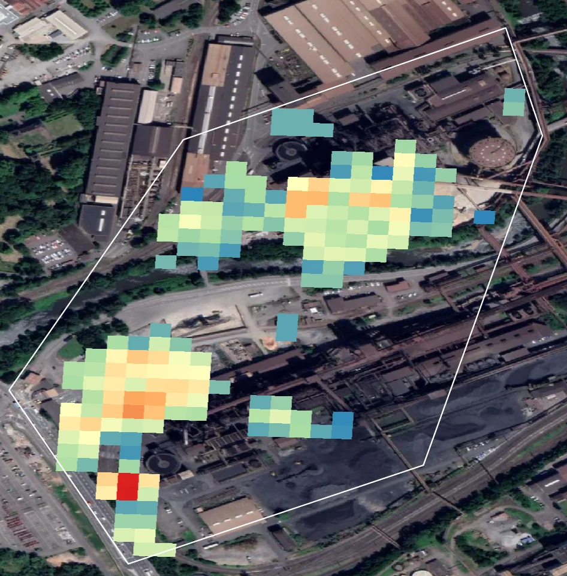
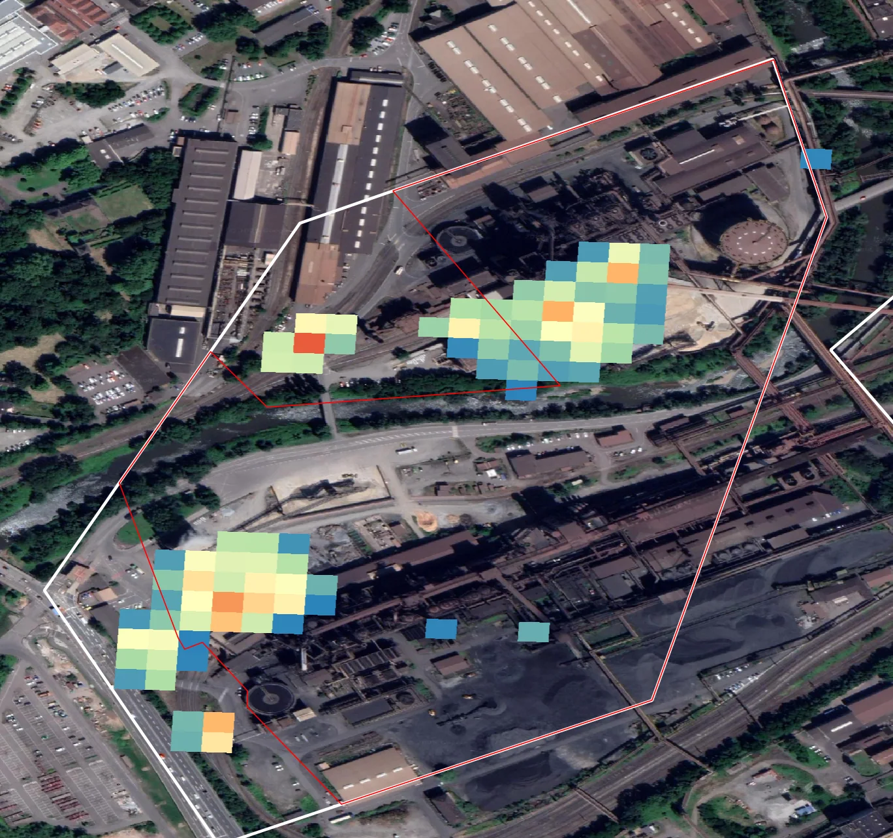
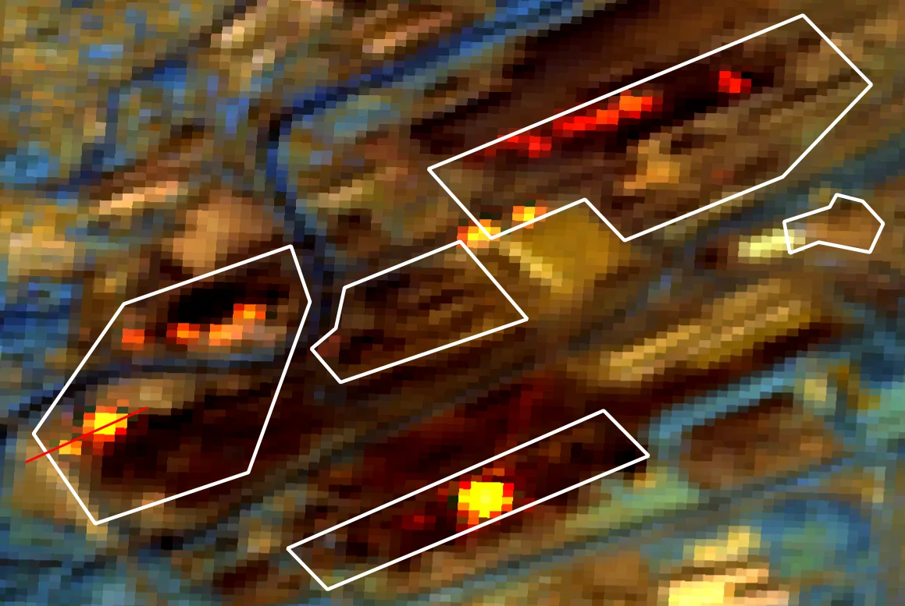
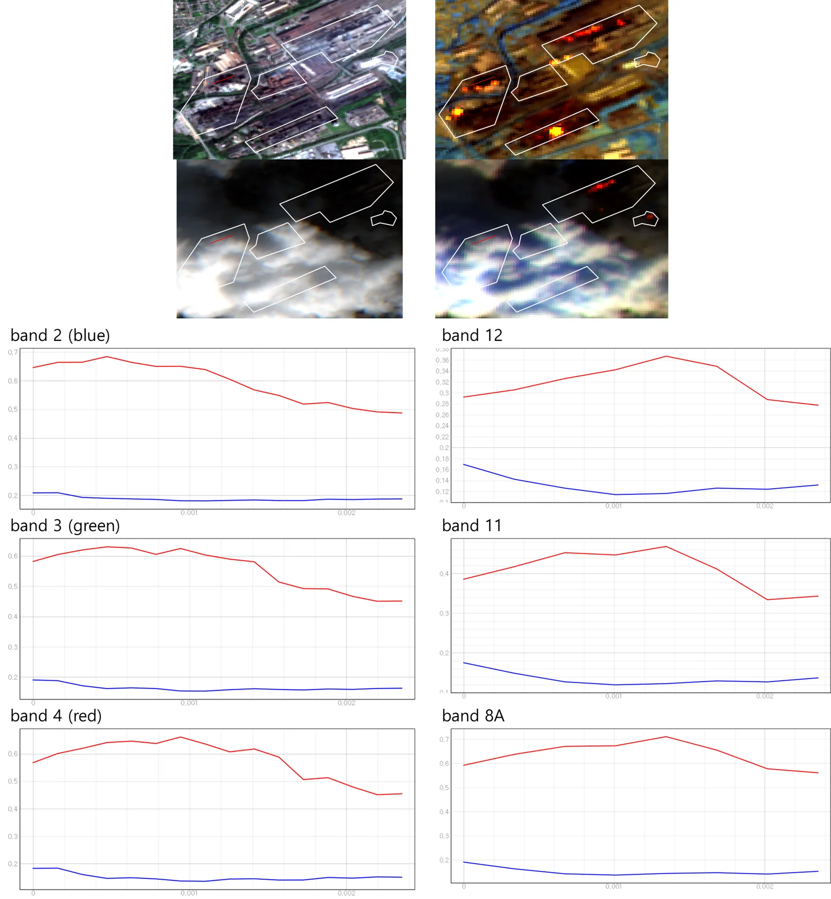
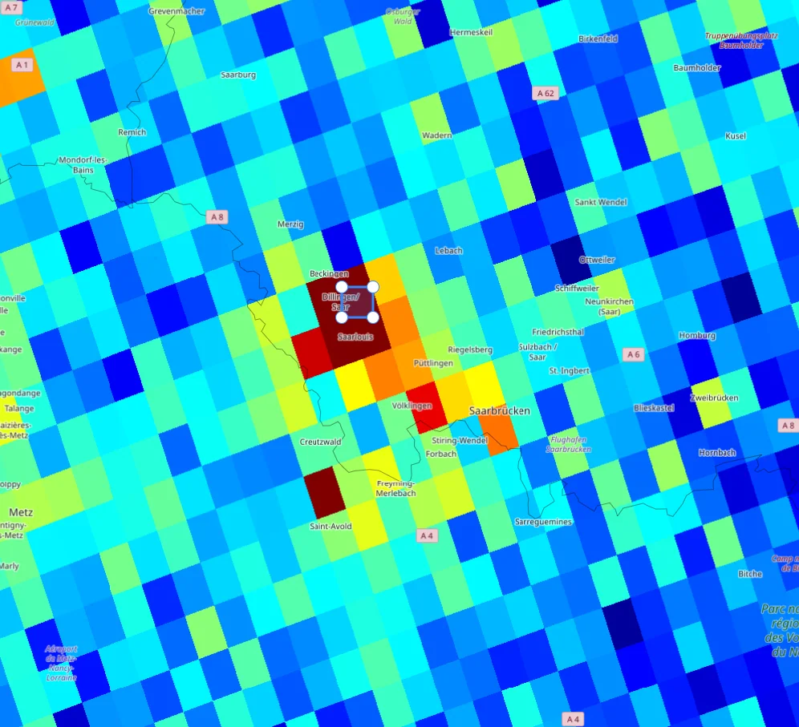
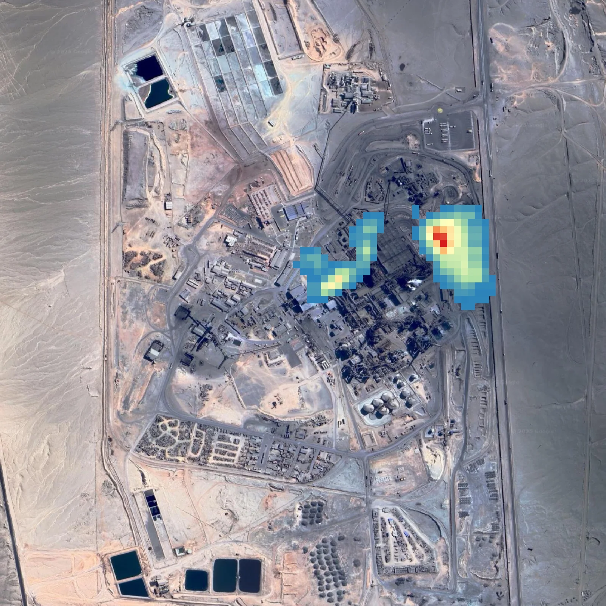
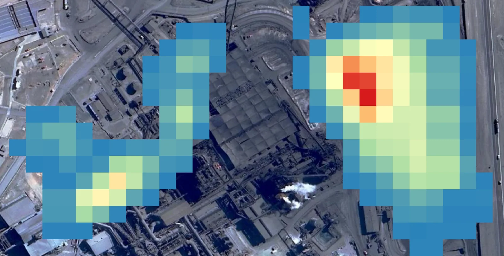
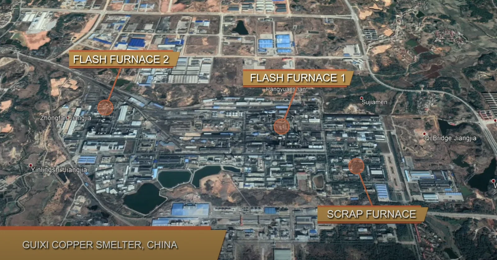

← 프로젝트 목록← All projects
제련소 열원 활동 모니터링 (TAI)Smelter Thermal Activity Monitoring (TAI)
Sentinel-2 SWIR 밴드로 용광로의 열 신호를 잡아 제련소 가동 여부를 원격 판정했다. 철강(독일·호주)과 구리(칠레·중국) 양쪽에 적용했다.Used Sentinel-2 SWIR bands to pick up furnace heat signatures and infer whether a smelter is running — applied to steel (Germany, Australia) and copper (Chile, China).
배경 · 목표Background
- 금속 제련소의 가동 여부를 위성으로 원격 판정할 수 있는지 기술적 가능성을 탐색했다.
- 탄소 배출 추적과 ESG 공급망 리스크 분석 수요에 대응하는 신규 솔루션이 목적이었다.
- 공식 생산 통계는 보통 한 달 지연된다. 위성이 그보다 빠르면 원자재 시장에 실질적 가치가 있다.
- Explored whether smelter operating status can be judged remotely from orbit.
- Motivated by demand for carbon-emission tracking and ESG supply-chain risk analysis.
- Official production statistics lag by about a month; a satellite signal that beats that lag has real value in commodity markets.
방법Method
- Sentinel-2 SWIR 밴드(B11·B12)의 고온 물체 감도를 이용해 TAI(Thermal Anomaly Index)를 설계·구현했다.
- Google Earth Engine에서 전체 관측 날짜의 누적 TAI 맵을 제작해 장기 가동 패턴을 분석했다.
- 제련소별 AOI 폴리곤을 공정 지식 기반으로 수동 제작했다 (용광로·슬래그장·원료야적장 구분).
- 독일(딜링엔·잘츠기터·브레멘·HKM·TK)·호주(와이알라·켐블라) 사례에서 실제 가동 기록(GT)과 상관분석.
- Sentinel-5P NO₂ 대류권 칼럼과 교차 비교해 배출 신호와의 정합성을 확인했다.
- 칠레·중국 구리 제련소로 확장 적용 (TAIsum 2018–2025 시계열).
- Designed and implemented a Thermal Anomaly Index (TAI) from Sentinel-2 SWIR bands (B11/B12), which respond to high-temperature targets.
- Built cumulative TAI maps across all acquisition dates in Google Earth Engine to reveal long-run operating patterns.
- Hand-drew per-smelter AOI polygons from process knowledge, separating furnaces, slag yards and feedstock stockpiles.
- Correlated against actual operating records for German (Dillingen, Salzgitter, Bremen, HKM, TK) and Australian (Whyalla, Kembla) sites.
- Cross-checked with Sentinel-5P tropospheric NO₂ columns to see whether the thermal and emission signals agree.
- Extended to Chilean and Chinese copper smelters (TAIsum 2018–2025 time series).
결과Results
- TAI 기반 제련소 활동 탐지 알고리즘 프로토타입 완성
- 독일·호주 사례에서 실제 가동 기록과의 상관관계 정량 분석
- 칠레·중국 구리 제련소 TAIsum 2018–2025 누적 시계열 산출
- 제련소별 AOI 폴리곤 세트 구축 (100여 개소 대상)
- A working TAI-based activity-detection prototype.
- Quantified correlation with ground-truth operating records at German and Australian sites.
- TAIsum cumulative series (2018–2025) for Chilean and Chinese copper smelters.
- An AOI polygon set covering ~100 smelters worldwide.









배운 점 · 한계What I learned · Limitations
- SWIR 밴드가 왜 고온 물체에 반응하는지(플랑크 복사의 단파장 꼬리) 물리적으로 이해했다.
- GT 데이터 확보의 어려움 — 기업은 가동률을 공개하지 않는다. 검증 설계 자체가 연구의 절반이었다.
- 위성 데이터가 공급망·ESG 분석이라는 비(非)지리 도메인에서 어떻게 값이 매겨지는지 감을 잡았다.
- 한계: 구름 오염 시 시계열이 끊긴다. Sentinel-3 SLSTR 열적외 연계를 시도하지 못한 것이 아쉽다.
- Understood physically why SWIR responds to hot targets — the short-wavelength tail of Planck emission.
- Ground truth is the hard part: companies do not publish utilisation rates, so designing the validation was half the work.
- Got a feel for how satellite data gets priced in a non-geospatial domain like supply-chain and ESG analysis.
- Limitation: cloud breaks the time series. I never got to pair it with Sentinel-3 SLSTR thermal infrared.
관련 코드Code
저장소는 센서 → 위성 → 기법 순으로 정리돼 있고, 각 폴더에 입력·출력 표가 있습니다.The repository is organised by sensor, satellite and technique; each folder documents its inputs and outputs.
산출물Deliverables
- TAI 산출 알고리즘 코드
- 제련소 AOI 폴리곤 세트
- 국가별 분석 결과 보고서
- TAI computation code
- Smelter AOI polygon set
- Per-country analysis reports
원본 보고서와 발표자료는 사내 자료로 공개하지 않습니다. 분석 코드는 GitHub에 정리되어 있습니다.Source reports and decks are internal and not published here. Analysis code is organised on GitHub.